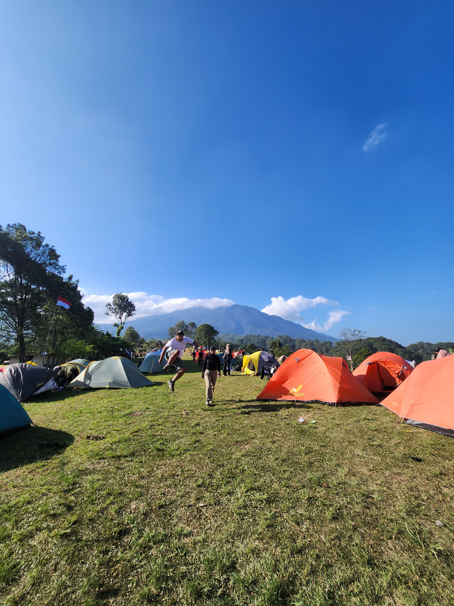

Profil M Yusuf
Nama: M Yusuf
NIM: 221011400664
Kelas: 05TPLE014
Alamat: Jl. Tanjung Barat Selatan, Jagakarsa, Tanjung Barat


Nama: M Yusuf
NIM: 221011400664
Kelas: 05TPLE014
Alamat: Jl. Tanjung Barat Selatan, Jagakarsa, Tanjung Barat